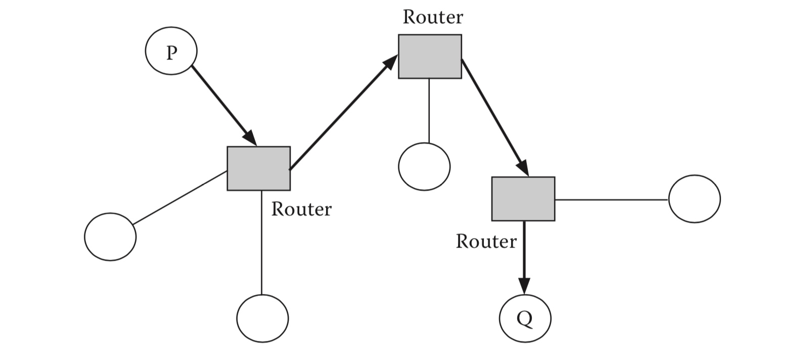
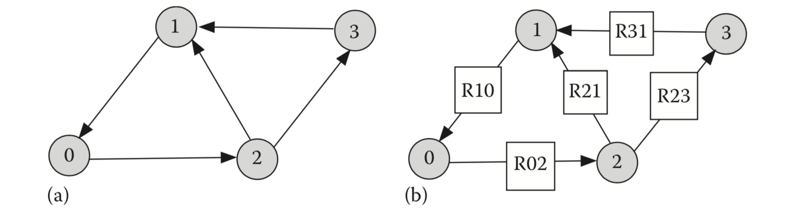
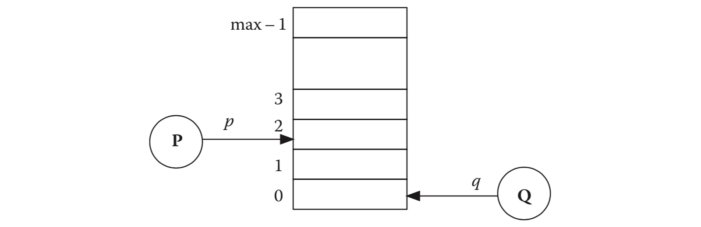
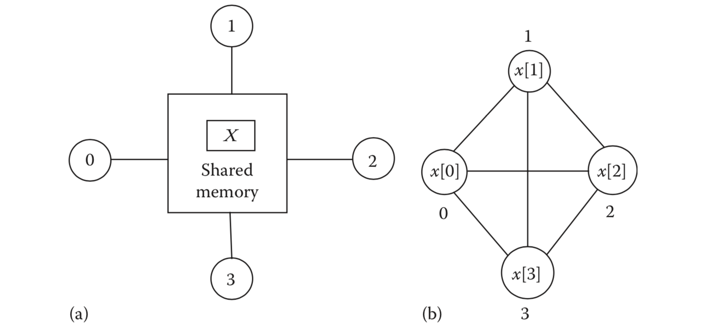
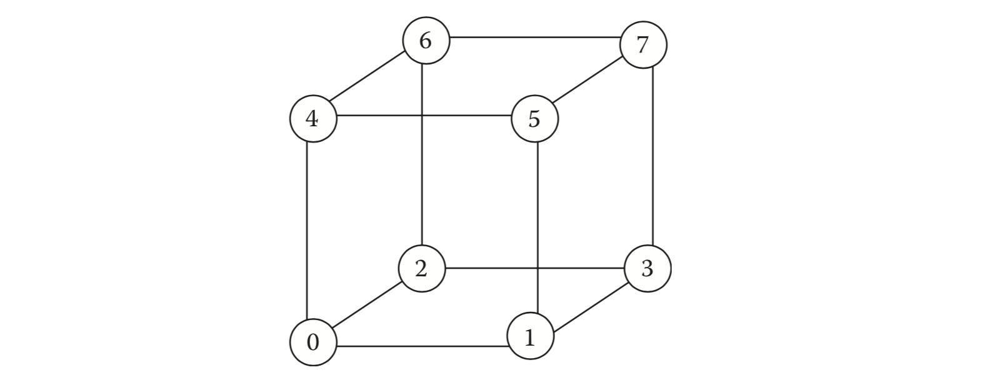

第三章 通信模型
3.1 需要一个模型
分布式计算涉及许多彼此通信的进程。我们在第2章中观察到进程间通信机制相当复杂。如果我们想为分布式系统开发算法或构建应用程序，那么进程间通信的细节可能会非常庞大。通常，分布式系统中存在许多可变性维度。这些包括网络拓扑，进程间通信机制，故障类和安全机制。模型是简单的抽象，有助于理解可变性 —— 抽象保留了本质特征，从系统的视角以更高级别对观察者隐藏了实现细节。显然，可以有许多不同的模型涵盖许多不同的方面。例如，静态拓扑网络不允许删除或添加节点或链接，但动态拓扑允许这样的更改。根据在现实世界中如何实现模型，从抽象模型派生的结果可以应用于各种平台。因此，在抽象模型上开发的路由算法可以应用于ad hoc无线LAN和传感器网络，而无需额外的工作。只要可以实现其特征或规范，模型是可以接受的，并且这些模型充分反映了现实世界中的事件。
3.2 进程间通信的消息传递模型
进程间通信是分布式系统中可变性的一个维度。捕获进程间通信本质的两个主要模型是消息传递模型和共享内存模型。 在本节中，我们将重点介绍消息传递模型的属性。
3.2.1 进程动作
通过图 G =(V, E) 表示分布式系统，其中 V 是一组节点，E 是连接节点对的一组边。每个节点都是一个顺序过程，每个边对应一对进程之间的通信通道。除非另有说明，否则我们假设图是有向的 —— 从节点 i 到节点 j 的边缘将由有序对 (i,j) 表示。一对过程 i，j之间的无向边缘等同于一对有向边缘，一个从 i 到 j，另一个从 j 到 i。节点的动作可以分为以下四类：
- 内部动作：当进程在其自己的地址空间中执行计算时，是内部动作，从而导致修改其一个或多个局部变量。
- 通信动作：当进程将消息发送到另一个进程或从另一个进程接收消息时的通信动作。
- 输入动作：当进程从系统外部的源读取数据时的输入动作。例如，在过程控制系统中，一个或多个过程可以输入由传感器监测的环境参数的值。这些数据可能会影响所考虑的系统的运行。
- 输出动作：当进程控制系统外部操作时的输出动作。一个例子是设置标志或发出警报。对于给定的系统，其外部的宇宙部分称为其环境。
消息沿着通道的有向边传播。假定通信是点对点的 —— 多播是源自指定发送方进程的一组点对点消息。通道可能是可靠的或不可靠的。在可靠的通道中，排除了消息的丢失或损坏。第12章将考虑不可靠的通道。在本章的其余部分，我们仅假设可靠的通道。
3.2.2 通道
以下公理形成了一类可靠通道的样本规范：
公理1 发送方发送的每条消息都由接收方接收，接收方收到的每条消息都由系统中的某个发送方发送。
公理2 每条消息都有一个任意但有限的非零传播延迟。
公理3 每个通道都是FIFO通道。 因此，如果 x 和 y 是由一个进程 P 发送到另一个进程 Q 的两个消息，并且在 y 之前发送 x，则在 y 之前也由 Q 接收 x。
我们没有假设传播延迟的上限。 设 c 是从进程 P 到进程 Q 的通道（图3.1），s(c) 是进程 P 发送到进程 Q 的消息序列，r(c) 是 Q 接收的消息序列。从上面的公理可以得出，在任何时刻，r(c) 是 s(c) 的前缀。

在公理2中，缺少传播延迟的预定上限是异步信道的重要特征。它还削弱了计算模型。实际上，根据信道的性质以及发送器和接收器之间的距离，有时可以指定传播延迟的上限。例如，考虑一个可以容纳在小房间内的系统，让信号直接沿着电线从一个过程传播到另一个过程。由于电信号的传播速度约为 1ft/ns，因此房间内20英尺链路的传播延迟显然几乎不会超过 20ns。1但是，如果系统的正确操作取决于传播延迟的上限，当链路长度增加到300英尺时，同一系统的正确性可能会受到损害。弱化模型的优点是，为任意大但有限延迟的信道设计的系统继续正常运行，无论传播延迟的实际值是多少。因此，延迟不敏感性增加了系统的鲁棒性和普遍适用性。
公理3不一定满足数据报服务 —— 数据包可能在接收端无序到达。为了使我们的模型适用，有必要假设存在一个服务层，在将这些数据包传递到接收者进程之前对其进行重新排序。我们希望仔细地将模型的内在属性与其在实际应用程序环境中的实现分开。
通道可以容纳多少条消息？有两种可能的方法来抽象：信道的容量可以是无限的也可以是有限的。通过无限容量的通道，发送方进程可以根据需要频繁发送消息 —— 通道永远不会被阻塞（或者由于存储限制而永远不会丢弃消息），无论接收方进程是否缓慢。但是，对于有限容量的通道，通道有时可能已满，尝试发送消息可能会阻止发送方或返回错误消息或导致消息被丢弃。虽然任何实际信道都具有有限的容量，但这种容量通常可能很大，以至于发送方很少受到影响。从这个角度来看，任意大容量的通道是一种有用的简化，而不是一种不合理的抽象。
通道是一种很有意思的共享数据对象。它在许多方面不同于存储器单元。例如，不可能将任何东西（在传统写入操作擦除存储器单元的旧内容的意义上）写入通道中 —— 只能将某些东西附加到通道的现有内容上。此限制的直接后果是无法撤销已沿通道发送的消息。类似地，人们无法读取通道中间的内容（传统读取是非破坏性的） —— 只能从通道读取和删除头部元素。除了追加和删除之外，很容易假设存在布尔函数 empty(c)，如果通道 c 为空，则返回 true。然而，确定某个通道在给定时刻是否为空是远非琐事。
3.2.3 同步与异步
分布式系统的另一个可变性维度是同步和异步。同步的广泛概念基于发送者和接收者保持同步时钟和以刚性时间关系执行动作。然而，更近的视图揭示了同步的许多方面，并且从完全异步到完全同步模型的过渡是渐进的。表征同步系统的一些行为如下：
同步时钟：在具有同步时钟的系统中，每个处理器的本地时钟显示相同的时间。一组独立时钟的读数会出现漂移，并且差异随着时间的推移而增加。即使使用原子钟，漂移也是可能的，尽管这种漂移的程度远小于使用普通电子元件设计的时钟之间的漂移程度。对于不太严格的应用，国内供电公司严格模仿这一标准，其中一秒等于交流电压60次振荡的时间（或根据欧洲标准以及澳大利亚和亚洲国家的50次振荡）2。由于时钟永远不能完美同步，因此同步时钟的较弱概念是本地时钟的实时漂移率具有已知的上限。
同步进程：同步进程系统在锁步同步中执行操作，即在每个步骤中，所有进程都执行符合条件的操作。然而，在现实生活中，由于中断，在处理器上运行的每个进程经常发生故障。结果，中断服务程序在两个连续指令的执行之间引入任意数量的延迟，使得它看起来像外部世界，好像指令执行速度是不可预测的，没有明显的下限。使用稍微不同的表征，当有一个已知的指令执行速度下限时，一个进程有时称为同步。
即使进程是异步的，计算有时会在阶段或轮次中进行 —— 在每个阶段或每个轮次，每个进程执行预定义的工作，并且没有进程启动第 (i + 1) 阶段，直到所有进程完成其第 i 个阶段。这种相位同步或轮次同步行为的实现需要使用适当的阶段同步协议。
同步通道：当沿着该通道的消息传播延迟存在已知上限时，通道被称为同步。这种通道也称为有界延迟通道。
同步消息顺序：当接收者进程按发送者进程发送的相同顺序接收消息时，消息顺序是同步的（第3.2.2节中的公理3满足此要求）。
同步通信：在同步通信中，发送方仅在接收方准备接收消息时才发送消息，反之亦然。当通信是异步的时，发送者和接收者之间没有协调。消息号 i 的发送者不关心是否已经接收到它发送的先前消息(i-1)。这种类型的发送操作也称为非阻塞发送操作。在阻塞发送中，仅当接收器发信号通知其准备接收消息时才发送消息。与发送一样，接收操作也可以是阻塞或非阻塞。在阻止接收中，进程无限期地等待很长时间以接收发送方期望的消息。如果接收操作是非阻塞的，则进程移动到下一个任务，以防预期的消息（尚未）到达并尝试稍后接收它。
同步通信涉及发送方和接收方进程之间的一种握手形式。在现实生活中，邮政或电子邮件通信是异步通信的一种形式，而电话交谈是同步通信的一个很好的例子。
在[H78]中，Tony Hoare介绍了通信顺序过程（CSP）模型 —— 它采用了同步通信的一种形式，其中一对相邻进程通过零容量的信道进行通信。发送方进程 P 执行指令 Q!x 以将其本地变量 x 的值输出到接收方进程 Q。接收方进程 Q 执行指令 P?y 以从 P 接收值并将其分配给其本地变量 y。指令 Q!x 和 P?y 的执行是同步的，因为这两个中的任何一个的执行被阻止，直到另一个进程准备好执行另一个指令。最近的同步通信示例是Ada集合点，RPC [BN84]和RMI。
请注意，在这五个特性中，我们在本章开头介绍的消息传递模型仅假设同步消息顺序。
2.3.4 实时系统
实时系统形成一类特殊的分布式系统，需要以及时和可预测的方式响应输入。及时性是一个至关重要的问题，通常，错过最后期限的成本很高。 根据截止日期的严重性，实时系统分为硬或软。空中交通管制系统是一个硬实时系统的一个例子，其中错过的最后期限可能会损害人的生命。自动售货机是软实时系统的一个例子，在硬币中插入适当数量后接收物品的延迟会给顾客带来一些烦恼，但不会发生严重事故。
3.3 共享变量
在消息传递模型中，每个进程都有一个私有地址空间。在另一种计算模型中，进程子集的地址空间重叠，地址空间的重叠部分用于进程间通信。该模型称为共享内存模型。共享内存模型在紧密耦合的多处理器上具有自然的实现。传统上，共享变量的并发操作是序列化的，并且许多共享内存算法的正确性依赖于此序列化属性。
消息传递和共享内存计算模型之间存在重要且微妙的差异。一个区别是，在共享内存模型中，变量或程序代码的单个副本由多个进程共享，而要在消息传递模型中共享该变量，每个进程必须具有它的独占副本。因此，更新的一致序列化是一项非常重要的任务。
由于共享变量的普及，许多计算集群都支持DSM，这是一种在不共享物理内存的计算机之间共享虚拟地址空间的抽象。底层硬件是多计算机，计算机使用消息传递相互通信。 DSM的主要功能是减轻用户对消息传递的复杂细节，并让他们使用更丰富的用于共享内存系统的并行编程工具。
分布式算法中使用的共享存储器模型的两种变体是（1）状态读取模型（也称为本地共享变量模型）和（2）链接寄存器模型。在状态读取模型中，除了其自身状态之外，任何进程都可以从附加到其上的邻居的通道中读取内容。但是，这样的进程只能更新自己的状态。图3.2a说明了状态读取模型，其中进程1和3可以读取进程2的状态，进程0可以读取进程1的状态。
在链接寄存器模型中，每个链接或通道都是单读单写寄存器（图3.2b）。发送方写入该寄存器，接收方从该寄存器读取。为避免其他复杂情况，链接寄存器模型还假定链接寄存器上的所有读写操作都是序列化的，即写操作永远不会与读操作重叠。3双向链接（由无向边表示）由一对组成链接寄存器。

3.3.1 Linda
耶鲁大学的David Gelernter于1985年开发了Linda [G85]。它是一个使用共享元组空间概念的并发编程模型，它本质上是一种共享的通信机制。一般原理类似于人工智能中使用的黑板系统。进程通过存入和撤销元组进行协作。进程可能彼此不了解，或者至少它们不直接相互通信。通信基于模式匹配，即，进程可以检查所需的元组，非常类似于数据库系统中的逐个查询范例，并检索满足该模式的一个或多个元组。存储元组是异步的，而查询过程可能会选择阻止自己，直到元组匹配为止。
Linda元组是无序的，由六个原语访问。原语OUT和IN用于将元组存入元组空间并从元组空间中提取元组 —— 这些元组分别模拟发送和接收操作。原语RD也接收元组，但与IN不同，它不会从空间中删除元组。INP和RDP是IN和RD的非阻塞版本 —— 当存在匹配的元组时，它们像IN和RD一样工作，否则返回false。最后，EVAL创建了新的进程，可以与Unix fork命令进行比较。
以下是作为C程序扩展编写的Linda程序的示例。主进程将任务委派给n个从进程。当所有从进程完成任务时，他们将“done”输出到元组空间。主设备从元组空间输入，然后打印一条消息，表明所有任务都已完成。
/** main program**/ real_main(argc,argv) int argc; char *argv[]; { int nslave, j, hello(); nslave = atoi (argv[1]); for (j = 0; j < nslave; j++) EVAL("slave", hello(j)); for (j = 0; j < nslave; j++) IN("done"); printf("Task completed.\n"); } /** subroutine hello **/ int hello (i) int i; { printf("Task from number %d.\n", i); OUT("done"); return(0); }
JavaSpace是一个基于Linda的对象协调系统。 元组空间可以实现为分布式数据结构，并且空间的一部分可以物理地映射到网络中的不同进程的本地存储器上。 更多细节可以在[CG89]中找到。
3.4 建模移动代理
移动代理是从一个进程迁移到另一个进程的程序代码。与被动消息不同，移动代理是可以与消息发送者进行比较的活动实体。代理程序代码在主机上执行，其中代理程序可以与主机上运行的程序的变量交互，使用其资源并采取自主路由决策。在迁移期间，执行进程将其状态从一台机器传输到另一台机器，同时保持其数据完好无损。正在使用两大类移动代理：一些支持强大的移动性，而另一些则不支持。通过强大的移动性，代理能够将其控制状态从一台机器转移到另一台机器 —— 因此在机器A中执行指令k之后，移动代理可以在下一台机器B中执行指令 (k + 1)。控制状态不会被传输 —— 所以在每个主机上，代码在没有这些信息的情况下执行。
移动代理补充了现有的进程间通信技术。在涉及超大型数据库的应用程序中，当客户端通过一些查询将移动代理程序发送到数据库服务器时，可以节省网络带宽，而不是将大量数据从服务器提取到客户端站点。移动代理还有助于断开操作模式。消息和移动代理可以共存：当某些任务使用消息传递时，移动代理可以执行协调整个网络或其中一小部分活动的任务。 Dartmouth的D'Agents和IBM的Aglets是两个着名的移动代理系统。
移动性较弱的移动代理可以如下建模：将代理的发起者称为其 home。每个移动代理由（至少）三个组件 (I, P, B) 指定。第一个组件I是代理标识符，对于每个代理都是唯一的。第二个组件P指定在其访问的每个进程中执行的代理程序。第三个组件B是公文包，表示代理程序要使用的数据变量。另外两个变量 current 和 next 跟踪代理的当前位置和下一个要访问的进程。以下是使用移动代理进行计算的示例：考虑计算在n个不同商店中销售的商品的最低价格的任务。让价格（i）表示商店i中商品的价格，并且让公文包变量 best 表示到目前为止代理商访问的商店中商品的最低价格。将每个商店视为一个进程。为了计算 best，发起者进程将移动代理发送到相邻进程。此后，代理在返回 home 之前在每个站点执行以下程序P：
initially current = home; best = price(home),
visit next; {next depends on a traversal algorithm}
{after reaching a new host}
while current ≠ home do
if price(i) < best then best := price(i) else skip end if;
visit next;
end while
需要进行另一次遍历才能在所有过程中传播 best 的值。读者可以将此解决方案的复杂性与消息传递或共享内存模型上的相应解决方案进行比较。
代理可以是流动的或自治的。在流动代理模型中，发起者使用代理应遵循的固定行程加载代理。对于自治代理，没有固定的行程 —— 在每个步骤中，代理需要确定它应该访问哪个进程以完成工作。
在网络管理中，一类模仿蚂蚁等生物实体的原始代理已被用于解决最短路径计算和拥塞控制等问题。个体代理没有任何明确的解决问题的知识，但是蚂蚁的集体行动会产生智能行动。 White [WP98]描述了基于蚂蚁算法的操作。
3.5 模型间的关系
虽然到目前为止讨论的所有模型仅与进程间通信有关，但其他模型处理其他可变性维度。例如，故障模型抽象了故障过程的行为，并在第13章中讨论。模型对程序员和算法设计者很重要。在设计问题的解决方案之前，了解游戏规则很重要。 当A和B的对象和操作之间存在1-1对应时，两个模型A和B是等价的。
3.5.1 强和弱模型
非正式地，一个模型A被认为比另一个模型B更强，当在A中实现对象（或操作）时，在B中需要多个对象（或操作）。例如，支持多播的模型比支持点对点通信的模型更强，因为通常使用多个点对点通信实现单个多播。4更强的术语也归因于与另一个模型相比具有更多约束的模型（称为较弱的模型）。从这个意义上讲，具有有界延迟信道的消息传递模型比具有无界延迟信道的消息传递模型更强。使用此视图，同步模型比异步模型更强大。请记住，强弱不是绝对的，而是相对属性，没有措施来量化它们。同样有时两个模型不能客观地进行比较，因此不能将其标记为比另一个更强。
您将采用哪种模型来设计分布式应用程序？这个问题没有独特的答案。一方面，强模型的选择简化了算法设计，因为与应用相关的许多约束都内置在模型中。这也简化了正确性证明。另一方面，当实现应用程序时，关键问题是底层硬件和操作系统提供的支持。有时，您可能希望将可用解决方案从备用模型移植到目标平台 —— 例如，在教科书中描述了在链接寄存器模型上运行的优雅领导者选举算法，并且您可能希望在消息上实现它 —— 通过具有有限进程延迟和有界通道容量的架构，因为这是目标平台的硬件架构所支持的。这可能会增加复杂性。
这种实现是模拟练习，不仅对实践者而且对理论家都有兴趣。可以使用模型B模拟模型A吗？这种模拟的时间和空间复杂性是什么？像这样的问题具有极大的挑战性和刺激性，构建这样的抽象层是计算机科学家的主要活动之一。一般来说，从较强的模型实现较弱的模型更简单，但使用较弱的模型实现更强的模型可能需要相当大的努力。在本节的其余部分中，我们概述了一些此类实现。
3.5.2 通过非 FIFO 通道实现 FIFO 通道
设 c 是从进程 P 到进程 Q 的非 FIFO 通道。假设沿 c 的消息延迟是任意的但是有限的。考虑由进程 P 发送的消息序列 m [0], m [1], m [2], … , m [k]。这里，i 表示消息 m[i] 的序列号。由于通道不是FIFO，即使 i>j，m[i] 之后 m[j] 也可能达到 Q 。为了模拟FIFO行为，流程Q分两个阶段运行：存储和交付。 这些阶段的作用解释如下：
存储：每当 Q 收到消息 m[j] 时，它将其存储在本地缓冲区中。
交付：仅在消息 m[j-1] 之后将消息传递给应已经被交付，进程 Q 将消息交付给引用。
以下描述了被称为重新排序协议的实现。 它假定每条消息都有一个单调增长的序列号。
{Sender process P}
var i : integer {initially 0}
repeat
send m[i],i to Q;
i := i+1;
forever
{Receiver process Q}
var k : integer {initially 0}
buffer : buffer [0..∞] of message
{initially for all k: buffer[k] = null}
repeat {store}
receive m[i],i from P;
store m[i] into buffer[i];
{deliver}
while buffer[k] ≠ null do
begin
deliver the content of buffer[k];
buffer [k] := null; k := k+1;
end
forever
解决方案有点简单，原因有两个：(1) 序列号可能变得任意大，使得无法适应有界大小的数据包，(2) 接收端所需的缓冲区大小必须是任意的大。
现在，更改模型。假设沿着通道 c 的消息传播延迟存在已知的 T 秒上限，并且过程 P 以每秒 r 个消息的统一速率发送消息。很容易观察到接收过程 Q 不会需要一个大于 r·T 的缓冲区，并且可以使用范围为 [0 … r·T) 的有界大小的序列号。同步有帮助！当然，这要求进程 Q 以比 r 更快的速率接收消息。
如何在具有无界消息传播延迟的系统上实现具有有界序列号的重测序协议？一个简单的解决方案是使用确认消息。让接收进程具有大小为 w 的缓冲区来存储已接收但尚未传递的所有消息。发送方将发送消息 m[0], m[1], …, m[w-1] 并等待来自接收方的确认。接收方将清空缓冲区并将其传送到应用程序并将确认消息发送给发送方。此后，发送方可以回收序列号 0 .. (w-1) 。
为保存缓冲区空间而支付的价格是消息吞吐率的降低。确切的吞吐量将取决于 w 的值，以及发送 m[w - 1] 和确认收据之间经过的时间。 w 的值越大，缓冲区大小越大，确认消息的数量越少，吞吐量越好。

3.5.3 使用共享内存实现消息传递
一个相对容易的任务是在共享内存多处理器上实现消息传递。这种模拟必须满足通道公理。在一对进程之间实现容量通道 (max - 1) 使用大小为 max 的循环消息缓冲区（图3.3）。
令 s[i] 表示发送方发送的第 i 个消息，r[j] 表示接收方接收的第 j 个消息。以下描述了实现。 观察到当通道已满时发送器被阻塞，而当通道为空时接收器被阻塞。
shared var p, q: integer {initially p = q}
buffer: array [0..max-1] of message
{Sender process P}
var s: array of messages sent by P, i : integer {initially 0}
repeat
if p ≠ q − 1 mod max then
begin
buffer[p] := s[i]; i := i + 1; p := p + 1 mod max
end
forever
{Receiver process Q}
var r: array of messages received by Q, j : integer {initially 0}
repeat
if q ≠ p mod max then
begin
r[j] := buffer[q]; j := j + 1; q := q + 1 mod max
end
forever
3.5.4 使用消息传递实现共享内存
我们看一下实现全部变量 X ，在这个系统中 n 个进程 0, 1, 2, …, n - 1 使用消息传递。每个进程 i 维护一个 X 的拷贝 x[i] （如图 3.4）。这里有一个重要的约束，不管什么时候一个进程读取 X 的时候，本地的拷贝必须与 X 最新的值保持一致。实现读和写操作 X 的第一步描述如下：

{Implementing shared memory by message passing: first attempt}
{read X by process i}
read x[i] x[i] := v
{write X := v by process i}
x[i] := v
Multicast v to every other process j (j ≠ i) in the system;
Process j (j ≠ i), after receiving the multicast, sets x[j] to v.
一个相对容易的任务是在共享内存多处理器上实现消息传递。这种模拟必须满足信道公理。在一对进程之间实现容量通道 (max - 1) 使用大小为 max 的循环消息缓冲区（图3.3）。 明显的目标是在每次更新操作之后使共享变量的每个本地副本彼此相同。但是，有问题。假设两个进程0和1正在尝试使用不同的值同时更新共享变量 X。这些更新有可能以不同的顺序到达进程2和3，使 x[2]≠x[3]。似乎可以通过使多播操作将 X 写入不可分割的操作（也称为原子操作）来解决问题，但实际上，它不能解决问题，因为它不能控制更新的到达顺序。在他们的目的地进程。因此，这里描述的解决方案是简单的，有缺陷的，不完整的。此外，实现原子操作远非微不足道，并且有自己的开销。5所需要的是保证所有进程始终以相同的顺序接收更新。这称为全序广播。它的实现取决于如何执行多播以及消息是否丢失以及进程是否容易出现故障。我们将在第16章讨论这一点的可行性。
3.5.5 使用通道的不可能性
让我们重新审视消息传递模型，并检查检测通道是否为空的问题。熟悉的场景如下：有两个进程 i 和 j 以及两个通道 (i，j) 和 (j，i) 。在冷启动期间，这些通道可能包含任意序列的消息。为了正确初始化通道，在开始执行程序之前，进程 j 想要确保通道 (i，j) 为空，以便它接收的任何消息实际上都是由进程 i 发送的。进程j 如何检测到这种情况？
如果时钟是同步的并且沿着信道 (i，j) 在消息传播延迟上存在上限 T，那么问题很简单 —— 进程 i 和 j 都暂停至少 T 秒 —— 这会刷新两个通道和每个进程拒绝在此期间到达的所有消息。在 T 秒之后，进程 j 知道通道 (i，j) 为空。
如果信道传播延迟没有已知上限怎么办？进程 j 等待有限时间并声明通道 (i，j) 为空是不可能的。另一种尝试是进程 j 向进程 i 发送消息，请求它沿着信道 (i，j) 回送特殊消息 *。如果通道是FIFO并且进程 j 在接收任何其他消息之前接收到特殊消息 *，那么 j 可能想要得出通道必须为空的结论。然而，美中不足 —— 它假设最初频道 (i，j) 不包含特殊信息 *。这与最初信道可以包含任意消息的假设相矛盾。
虽然这不是正式的不可能性证明，但事实证明，如果没有消息传播延迟的上限，即使已知它是FIFO，也不可能检测通道是否为空。
3.6 基于特殊属性的分类
分布式系统有时也基于特殊属性或特殊功能进行分类。 这里有一些分类。
3.6.1 反应与转移系统
当一个或多个进程不断响应环境变化或用户请求时，分布式系统被称为反应式的。反应系统的一个例子是服务器。通常，服务器永远不会休眠 —— 每当客户端进程发出服务请求时，服务器就会提供所需的服务。反应系统的另一个例子是令牌环网络。请求服务的进程等待获取令牌，并在完成发送或接收操作后，释放最终传递给另一个等待进程的令牌。照此一直进行。
非反应系统的目标是通过组件进程的动作将初始状态转换为最终状态并到达终点。一个例子是在进程网络中计算路由表。当计算终止或达到固定点时，每个进程都正确配置其路由表。除非拓扑发生故障或更改，否则无需重新计算路由表。非反应系统也称为转换系统。
3.6.2 命名和匿名系统
当算法不考虑进程的名称或标识符时，分布式系统称为匿名的。否则，它是一个命名系统。大多数真实系统都是命名系统。但是，匿名是一种美学上令人愉悦的属性，它允许计算无阻碍地运行，即使进程更改其名称或新创建的进程占用旧进程的任务。从空间复杂性的角度来看，每个进程至少需要 log_{2}n 位来存储其名称，其中 n 是进程数。这在匿名系统中变得不必要了。
匿名系统对算法设计者提出了不同的挑战。没有标识符或名称，过程变得难以区分。这种对称性为那些要求结果不对称的应用造成了麻烦。例如，考虑在 n(n> 1) 个进程的网络中选举领导者的任务。因为根据定义，只有一个领导者，结果显然是不对称的。但是，由于每个过程都是从相同的初始状态开始，并且每个步骤都会执行相同的指令，因此没有明显的保证结果是不对称的，至少使用确定性方法。在这种情况下，概率技术对于破坏对称性变得有用。
3.7 复杂性度量
分布式算法的成本或复杂性取决于算法以及模型。两个众所周知的复杂度量度是空间复杂度（每个进程）和时间复杂度。
算法的空间复杂度是根据系统大小求解算法实例所需的存储空间量。当内存成本急剧下降时，人们可能想知道我们是否应该关心空间复杂性。在当今技术的背景下，绝对测量对于大多数应用可能不是非常重要，但是作为网络中节点数量（或网络直径）的函数的增长规模可能是重大问题。由 O(1) 使用大 O 表示法表示的恒定空间复杂度显然是最好的，因为每个进程的空间要求不受网络增长的影响。此外，许多应用程序要求进程将其当前状态的值发送到远程进程。恒定空间的好处是无论网络的大小或拓扑结构如何，消息大小都保持不变。
对于时间复杂性，可以使用许多措施。其中一些措施是从整个系统的模糊时间概念演变而来，以及分布式计算的非确定性。可接受的度量标准是从开始到结束的最坏情况下所有进程所需的步骤总数，每个步骤都考虑了一个基本操作。由于操作系统产生的中断，算法的执行可能会一次次停止，但时间复杂度测量不受这些不可预测的中断的影响。
利用当今的技术，处理器时钟的速率大于1 GHz，但消息传播延迟仍然在几微秒到几毫秒之间。通信成本是执行分布式算法所需时间的主要开销。因此，更相关的度量是消息复杂度，在算法实例期间交换的消息的数量，作为系统大小的函数。消息复杂性填补了传统时间复杂度中留下的空白。
反对使用消息数量作为消息复杂性的公平度量的论据如下。消息不具有恒定大小 —— 消息的大小可以是64或128位到几百万位。如果考虑消息大小，则有时发送大量短消息的成本可能低于发送少量大消息的成本。这表明在算法执行期间交换的总比特数（即比特复杂度）应该是更合适的通信成本度量。消息复杂性中的另一种分类形式基于LOCAL和CONGEST模型[Peleg00]。 LOCAL模型是简单的 —— 它忽略了消息的大小（以及处理它们所需时间的可变性），并假设所有启用的进程同时执行它们的操作。CONGEST模型考虑了通信量，并对基本消息大小强制实施 O(log\ n) 限制，其中 n 是系统的大小。然而，CONGEST模型允许进程动作是同步的或异步的。
在具有任意消息传播延迟的纯异步消息传递模型中，绝对时间不起作用。但是，在具有有界信道延迟和近似同步时钟的模型中，有用的替代度量是执行算法实例所需的总时间。人们可以分别估计平均和最坏情况的复杂性。
共享内存模型以简单的方式处理共享通信成本。每个进程的程序是一系列离散步骤，包括通过读取相邻过程的状态变量来进行通信开销（因此，它需要一步来读取相邻过程的状态）。这些离散步骤的大小或粒度称为计算的原子性，整个计算是原子步骤序列的交错。算法的时间复杂度是所有进程在执行期间所采取的步骤总数，作为系统大小的函数。与空间复杂性一样，关键问题还在于随着网络规模或网络直径的增长而增加时间复杂度。
例 3.1：超立方体中的多播
考虑具有 n = 2k 个进程的 k 立方体。 每个顶点代表一个进程，每个边代表一个双向FIFO通道。 进程0是多播的发起者 - 它周期性地多播一个值，该值更新 n 多维数据集中每个进程中的局部变量 x。 令 x[i] 表示进程 i 中的 x 的值。 x[i] 的初始值可以是任意的。 k = 3 的情况如图3.5所示。

{Program for process i > 0}
receive message m {m contains the value};
if m is received for the first time
then x[i] := m.value;
send x[j] to each node in {j ∈ N(i): j > i}
else discard m
end if
当每个进程 j 已经从每个邻居 i <j 接收到消息并且向每个邻居 k>j （每当存在一个）发送消息时，多播终止。
由于消息恰好遍历每个边一次，所以算法的消息复杂度为 | E |，其中 E 是边集合。很容易观察到这一点 | E | =(1/2) n·log_{2}n。
例 3.2
我们现在在状态读取模型上解决相同的问题，其中每个进程可以读取其所有邻居的状态。和以前一样，进程从任意初始状态开始。进程0首先执行 x[0]:= v（其中 v 是要多播的值），此后，进程0保持空闲。每个其他进程执行以下程序：
{Program for process i>0}
while ∃j ∈N(i): (j < i) ∧ (x(i) ≠ x(j)) do x(i) := x(j) end while
如果多播完成，∀i, j: x(i) = x(j)。
在状态读取模型中，发送者是被动的 —— 接收者的责任是 —— 从发送方获取适当的值（而不是在消息传递模型中推送值）。因此，当进程从较低编号的进程中提取不同的 x 值时，它无法知道它是否是源选择的值，或者它是该节点的未知初始值。通过所有进程执行的赋值语句的最大数量来度量的时间复杂度可以是任意大的。为了理解原因，假设在图3.5中，节点3,5,6和7的初始状态彼此不同。这里，节点7可以继续一个接一个地复制这三个邻居的状态无限长时间。但是，最终，节点3,5,6将其状态设置为节点0的状态，此后，节点7将需要再多一步将 x[7] 设置为来自节点0的多播值。这就是为什么上层时间复杂度的界限是有限的，但是任意大。
但是，如果 x [i] 的初始值不是任意的（在第一次多播结束后就是这种情况），则消息复杂性将与消息传递模型中的相同。即使 x 的初始值是任意的，我们也可以设计一个具有有限时间复杂度的替代解决方案，如下所示：为每个进程分配一个大小为 log\ n 的额外缓冲区空间，并要求每个进程读取和记忆状态在修改自己的状态之前，所有具有较低 id 的邻居。只有当所有较低编号的邻居的状态相同且与其自身状态不同时，进程才会更新其状态。进程 i 的修改规则如下：
while ∀j, k ∈ N(i): j < i ∧ k < i, x(j) = x(k) ∧ x[i] ≠ x[j] do x(i) := x(j) end while
当谓词对所有进程都为假时，多播终止。在 k 立方体中，完成多播的所有进程所需的最大步数可以如下计算。我们关注的是距离源最远的进程所需的最大步骤数，以便从源获取值，因为很容易认为到那时多播将到达所有其他进程。在一步之后，距离过程0最远的过程（即距离 k ）与其 distance-1 邻居的状态相关联；在额外的 (k_{C_1} +1) 步骤之后，它复制其 distance-2邻居的状态;在一个额外的 (k_{C_2} + k_{C_1} + 1) 步之后，它会复制其 distance-3 邻居的状态；等等。完成多播的步骤总数是所有这些步骤的总和。由于从最远的过程复制值所需的步数是 (k_{C_k} + k_{C_{k-1}} + … + k_{C_2} + k_{C_1} + 1) \le 2^k，并且从任何中间距离复制值的时间受此上限的限制，完成组播所需的最大步数 ≤k⋅2k，即 O(n\ log\ n)。
舍入复杂性：异步系统中时间复杂度的另一个衡量标准是基于轮次。从历史上看，一轮涉及以锁步同步执行其动作的同步进程，而轮次复杂度是每个过程作为输入大小的函数所采取的步骤数。在异步系统中，轮次是一个执行序列，其中最慢的进程执行一个步骤。当然，在此期间，更快的进程可能需要一个或多个步骤。从而， 以下在四个进程 0,1,2,3 的系统中执行构成两轮：
1 2 0 2 1 3 2 1 0 1 3 ----------- ---------
如果进程以锁步同步方式执行其操作，则轮次的概念可以衡量必要步骤的数量。例2的修改版本中的算法将完成 log_{2}n轮次，log_{2}n是网络的直径。
此处所示的示例仅使用确定性操作。有一套丰富的分布式计算中使用概率或随机动作的算法，其中使用硬币决定进程的下一个状态或邻居的选择 翻转。由于时间复杂度可能因运行而异，因此时间复杂度在这种情况下，可以通过预期的步数或数量来确定高概率所需步骤（缩写为w.h.p.），这是同义词 概率 \ge(1-(1/n^c))，其中 c>1。我们将在第10章中研究几个概率算法。
3.8 结束语
模型是真实系统的抽象。当真实系统复杂时，关于正确性的推理变得复杂。在这种情况下，各种抽象机制被用来隐藏与主要问题无关的某些细节。较弱的模型具有较少的约束。在较弱的模型上正常运行的系统通常可以在更强的模型上正确运行而无需额外的工作，但反过来却不正确。本章提供了局部视图 —— 它只关注各种模型的一些更广泛的特征，但忽略了与动作或计算粒度的调度相关的更困难和微妙的问题。这些将在第5章讨论，我们将讨论程序的正确性。使用另一种模型实现一种模型在智力上具有挑战性，特别是当我们探索空间和时间复杂性的极限时。不可能性，空间的上限和下限，时间或消息需求的相关的结果构成了分布式计算理论的基础。
3.9 参考书目
Brinch Hansen的RC4000操作系统[BH73]是基于消息传递模型的首批实用系统之一。原始核支持四个原语，以使用共享缓冲池启用客户端 —— 服务器通信。 Cynthia Dwork首先介绍了同步行为的分类。在一篇经典论文（CSP）中，Hoare引入了同步消息传递[H78]作为通过握手进行通信的一种形式。 INMOS的David May在Occam [M83]中实现了它。该模型的其他众所周知的例子是Ada Rendezvous和RPC。 David Gelernter [G85]开发了Linda。从那时起，Linda原语已被添加到C或FORTRAN等多种语言中。消息传递的两个突出和当代用途是MPI（在1994年的MPI论坛中引入 - 参见Marc Snir等人的文章[DOSW96]）和Geist等人的并行虚拟机（PVM） [GBDW + 94]。第2章介绍的各种中间件强调了消息传递模型的重要性。两个着名的移动代理实现工具是Dartmouth的D'Agent [GKC + 98]和IBM的Aglets [LO98]，移动代理的各种抽象可以在[AAKK + 00]和[G00]中找到。
共享变量已经受到多处理器早期的关注，并且已经在各种同步原语的背景下进行了广泛的研究。在现代上下文中，共享变量的重要性在于许多编程语言都支持共享变量抽象，而不管它们是如何实现的。 DSM在任意多计算机基板上创建共享存储器的错觉。在客户端 —— 服务器计算中，客户端和服务器使用消息相互通信，但是间接通信使用服务器维护的共享对象。 有关算法复杂性的讨论，请阅读Cormen等人的经典著作 [CLR + 01]。 Peleg [Peleg00]介绍了LOCAL和CONGEST模型。